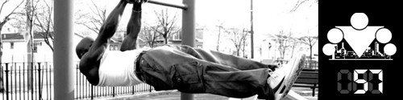

Первая неделя
ПРОДВИНУТОГО блока осталась позади, а это значит, что пришло время подвести итоги того, что мы узнали нового за прошедшую неделю:
День 50. Схема тренировок ПРОДВИНУТОГО блока
День 51. Ещё раз про Подтягивания на перекладине
День 52. Ещё раз про Приседания
День 53. Ещё раз про Отжимания от пола
День 54. Ещё раз про Выпады
День 55. Прислушивайтесь к себе
День 56. Боремся с плохой наукой
Начинается новая тренировочная неделя, а это значит, что самое время познакомить вас с новой техникой исполнения упражнений!
Продвинутые техники - это способ усложнить и разнообразить программу. Если вам хватает нагрузок от стандартной, то можете ничего в схеме тренировок не менять.
Памятка
Итак, мы приняли во внимание отклики участников предыдущего запуска 100 дневного воркаута и пришли к выводу, что в ПРОДВИНУТОМ блоке должно быть больше разнообразия. Но это должно быть полезное разнообразие, которое не только позволит снизить психологическую усталость от определенной однообразности кругов, но и позволит повысить итоговые результаты всех участников.
Для достижения этих двух целей мы решили расширить понравившееся многим нововведение с демонстрацией новых техник выполнения упражнений с 1 дня (как было в предыдущем запуске) до 7 (то есть до целой недели)!
Перед тем, как непосредственно перейти к демонстрации техники, которую мы выбрали для вас на первой неделе ПРОДВИНУТОГО блока, нам необходимо дать вам несколько ценных указаний:
(1) Ваши круги в рамках ПРОДВИНУТОГО блока будут состоять из тех же упражнений, что и в БАЗОВОМ блоке - подтягивания, приседания и отжимания от пола и выпады. При этом вы подтягиваетесь, отжимаетесь и приседаете с использованием новой техники, а выпады делаете либо с новой техникой, либо как обычно (по своему желанию). Затем отдыхаете 30-60 секунд и делаете новый круг.
(2) Количество повторений подсказать сложно, поэтому здесь вам придется научиться правильно оценивать свои силы. С нашей стороны мы будем всегда объявлять сложность демонстрируемой техники относительно обычного варианта.
(3) Если в каком-то из кругов вы не сможете выполнить необходимое количество повторений в каком-либо из упражнений, то этот круг считается последним в сегодняшней тренировке. После него сделайте каждое упражнение (подтягивание, отжимание, приседание) по очереди на статическое удержание в точке максимального напряжения:
- для подтягиваний - удерживайтесь в верхней точке,
- для отжиманий - удерживайтесь по середине движения,
- приседание - удерживайтесь в положении бедер параллельно земле.
Введение такого ограничения связано в первую очередь с тем, что вы все ещё должны успевать восстанавливаться за 24 часа между тренировками, чтобы тренироваться каждый день. Поэтому если вы вдруг ошиблись с подбором нужного числа повторений (а вероятность этого есть), данное ограничение защитит вас от перетренированности. По крайней мере мы на это рассчитываем =)
(4) Если в какой-то момент вы поймете, что ПРОДВИНУТАЯ нагрузка становится чрезмерной, то вы всегда можете на несколько дней вернуться к обычному стилю выполнения. Вы можете чередовать обычные и продвинутые стили в течение недели. В общем, здесь есть определенный простор для творчества, связанный с тем, что все мы разные, и пока у нас слишком мало статистики по ПРОДВИНУТОМУ блоку, чтобы давать вам однозначные рекомендации!
Вроде бы все, что нужно сказал, так что переходим к главной теме сегодняшнего инфо-поста, и на этой неделе мы предлагаем вам...
ТЕХНИКА: ПЕРЕМЕЩЕНИЕ В ПРОСТРАНСТВЕ
Сегодня мы будем изучать технику, которая добавляет движения в пространстве к вашим обычным повторениям. Её смысл заключается в том, чтобы сделать одно повторение, затем сделать шаг влево или вправо (можно так же пробовать варианты вперед или назад) и сделать следующее повторение.
Например, рассмотрим подтягивания. Повиснув на турнике и выполнив одно подтягивание, вы перемещаетесь влево или вправо по турнику, после чего выполняете ещё одно повторение. Аналогично выполняете повторения в отжиманиях от пола, приседаниях и выпадах.
======> День 58. Сколько нужно пить воды?